솔루션 회사 이야기

솔루션 회사에서 근무하며 겪었던 솔루션 업무 관련 이야기이다.
기업용 End-Point 보안 솔루션 만들어 판매하는 회사에 입사하여
우연히 증권사에서 솔루션 고도화 프로젝트를 시작하게 되었다.
솔루션 업그레이드 패치 제작
신입 시절, 맡았던 업무는 솔루션 업그레이드 패치 만들기였다.
조사하기
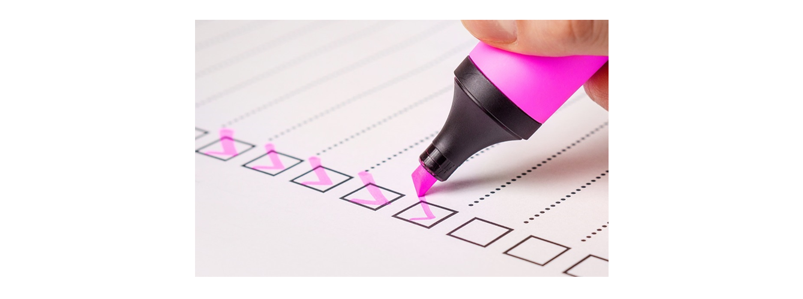
이미 솔루션은 사용중이었으나 현재 프로젝트는 고도화 프로젝트로 솔루션 업그레이드 패치 제작을 위해 기존 PC에 설치된 파일을 아래와 같이 조사하기 시작했다.
- 현재 PC에 설치된 모듈 리스트
- 삭제될 모듈 리스트
- 추가할 모듈 리스트
- 삭제할 레지스트리 정보
- 추가할 레지스트리 정보
솔루션은 Client & Server로 이루어져 있고, 이번 프로젝트는 Server도 새로 구축했기 때문에 클라이언트 레지스트리에 등록된 정보를 변경할 필요가 있다.
패치(patch)는 어떻게 만드는가?
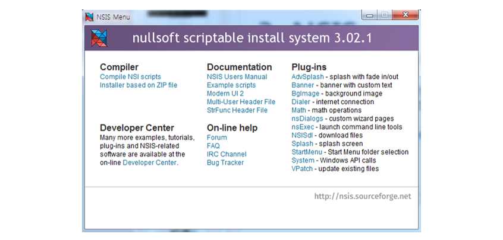
패치는 NSIS(Nullsoft Scriptable Install System)을 사용했다.
업무를 진행하기 위해 그당시 사수였던 분은 예제 스크립트 파일을 몇개 전달하며 해당 스크립트를 통해서 새로운 패치파일을 만들기 시작했다.
패치(patch)의 기본 원리
패치는 기본적으로 대상 파일을 교체하는 것이 기본 동작이라고 할 수 있다.
- 교체할 원본 파일을 리네임
- 새로운 파일을 복사
- 리네임 했던 파일을 삭제
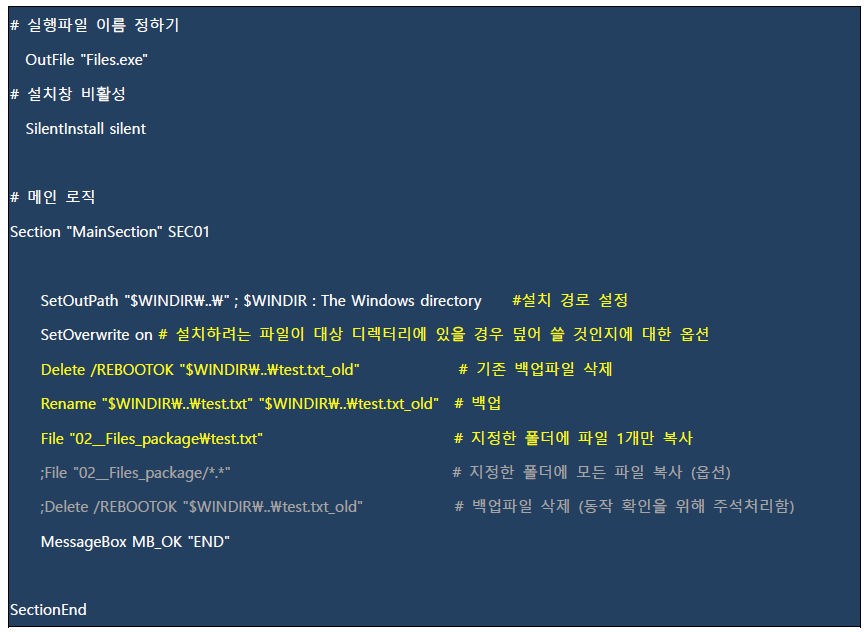 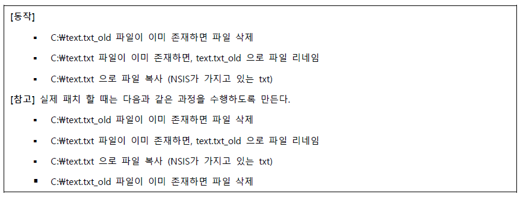파일교체 스크립트 예제
파일교체 스크립트 설명
그외 추가적으로 고려해야 할 것이 더 있는데
- 솔루션이 서비스 형태로 실행 중인 상태
- 교체할 모듈이 어떤 프로그램에서 사용 중인 상태
잘못되면 패치오류가 발생 할 수 있기 때문에 해당 부분을 확인하고 진행 할 수 있어야 한다.
패치(patch)의 내부 구조
패치를 만드는 사람에 따라 다를 수 있겠지만 필자가 경험했던 패치파일의 내부 구조는 아래 그림과 같다.
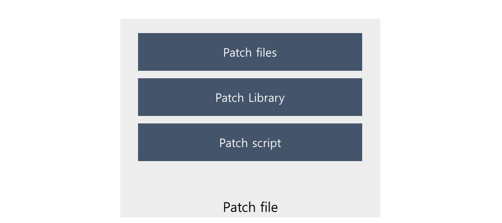
패치 내부구조
| 종류 | 설명 |
|---|---|
| Patch files | 실제 SW 패치를 위한 파일들을 관리 |
| Patch Library | 패치 스크립트가 하지 못하는 추가적인 기능이 dll 형태로 관리 |
| Patch script | 패치를 실행하면 어떻게 동작할 것 인가에 대한 스크립트 |
패치파일은 압축파일과 동일하다고 이해하면 쉽다.
그리고 단순히 압축된 파일을 해제하는 것이 아닌 추가적인 기능을 더 제공한다.
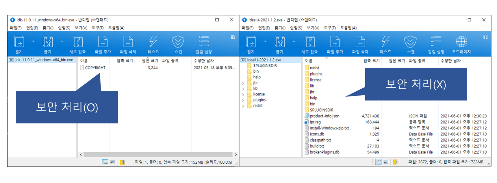
배포파일 내부 비교
설치파일이나 패치파일이 압축파일과 동일하다고 생각하는 이유가 위와 같다.
왼쪽은 오라클 JDK 설치파일 내용을 열어본 것이고,
오른쪽은 IntelliJ IDEA이라는 설치파일 내용을 열어 본 것이다.
배포파일 보안이 필요하면 오라클 JDK 설치파일과 같이 분석을 할 수 없도록 특별한 방법을 적용 해야 한다.
윈도우 환경에서 패치작업
요즘 윈도우는 기본 64bit 환경으로 기본으로 설치하기 때문에 64bit OS 환경 기준으로 설명 하겠다.
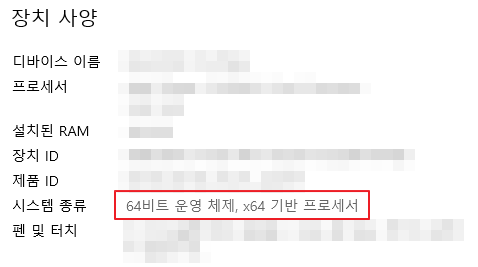
64bit Windows 환경 정보
32/64bit 프로그램 확인 방법
간단하게 작업 관리자를 실행하면 프로세스 탭에서 아래 그림과 같은 정보를 확인 할 수 있다.
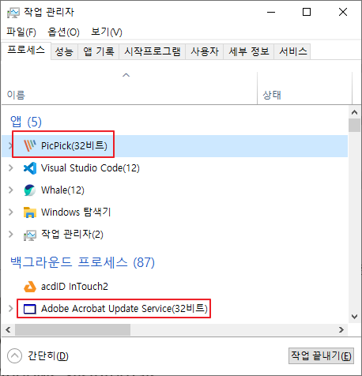
작업관리자로 32bit application 확인
32bit application은 작업관리자에서 프로그램이름(32비트) 라고 표시 되는 것을 알 수 있다.
레지스트리
윈도우 환경에서 설치파일 또는 패치파일 만들 때 레지스트리에 서버관련 정보를 등록하는데
regedit를 실행하면 HKEY_LOCAL_MACHINE 부분을 주로 추가하거나 수정을 한다.
| bit | path |
|---|---|
| 32 bit application | HKEY_LOCAL_MACHINE\SOFTWARE\WOW6432Node |
| 64 bit application | HKEY_LOCAL_MACHINE\SOFTWARE |
윈도우 시작 했을 때 프로그램을 자동 실행할 수 있도록 옵션을 지정 할 수 있다.
| 기능 | path |
|---|---|
| 자동실행 (계속) | HKEY_LOCAL_MACHINE\SOFTWARE\Microsoft\Windows\CurrentVersion\Run |
| 한번실행 (일회성) | HKEY_LOCAL_MACHINE\SOFTWARE\Microsoft\Windows\CurrentVersion\RunOnce |
윈도우 서비스 관리
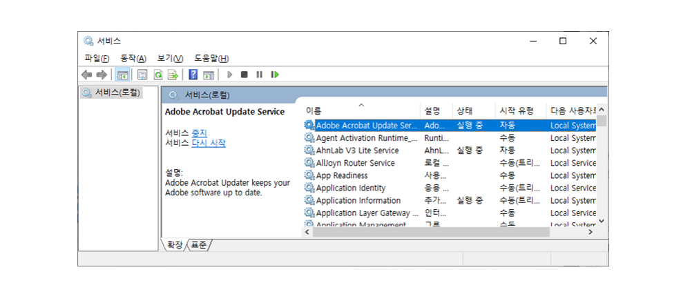
솔루션에서 패치나 설치 파일을 만들 때 윈도우 서비스(service.msc) 등록이나 삭제 하는 작업을 포함 시켜야 할 경우가 있기 때문에 알아두면 좋다.
| 기능 | 명령어 |
|---|---|
| 서비스 등록 | sc create [서비스명] binpath= [서비스 파일 경로] |
| 서비스 삭제 | sc delete [서비스명] |
| 서비스 시작 | sc start [서비스명] |
| 서비스 중지 | sc stop [서비스명] |
system32
윈도우 폴더에도 시스템 관련 파일 작업을 해야 하는데 마찬가지로 32 bit와 64 bit application 폴더 위치가 구분되어 있다.
| bit | path |
|---|---|
| 32 bit application | C:\Windows\SysWOW64 |
| 64 bit application | C:\Windows\System32 |
Visual C++ 재배포 가능 패키지
C++ 응용 프로그램을 실행하는 데 필요한 런타임 구성 요소를 말하는데
Visual Studio 버전에 따라 설치파일에 포함시켜야 할 때가 있다.

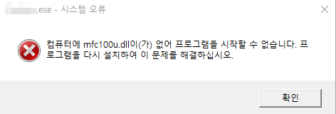
재배포 가능 패키지 설치가 필요하다
설치파일에 Visual Studio 버전에 맞는 재배포 가능 패키지를 포함시켜 솔루션 설치 이전에 먼저 설치를 수행하거나 이미 설치되어 있으면 솔루션을 설치를 시작한다.
한컴 오피스 같은 경우 재배포 가능 패키지를 설치파일에 내장 시키지 않고 마이크로소프트에서 배포하는 다운로드 링크로 직접 받아서 설치를 진행하는 방식으로 처리 하기도 한다.
재배포 패키지 배포 관련 이슈사항
가끔 재배포 패키지 버전이 꼬이면 재설치로도 해결 할 수 없는 오류가 발생하는데
이미 PC에 상위버전 (2019 재배포 패키지)가 설치되어 있고
Visual Studio 2008로 개발된 솔루션을 설치하기 위하여 2008 재배포 패키지를 설치하려 한다면 해결 할 수 없는 오류가 발생하기도 한다.
재배포 패키지도 하위 버전 부터 순서대로 설치해야 한다고 하는데 이런경우 현장에서 당장 해결할 수 있는 방법이 없어 난감하다.
Windows Sysinternals
윈도우 환경에서 솔루션 장애처리를 하기 위해서
http://live.sysinternals.com/ 에서 배포하는 도구를 받아 활용한다.
| 프로그램 | 설명 |
|---|---|
| DebugView | application 로그 확인 |
| Process Explorer | application에서 사용하는 dll 확인 또는 검색 |
| Process Monitor | OS 상에 프로세스, 파일, 레지스트리 정보를 수집하여 분석 |
DebugView 팁
장애를 분석하기 위해서 방법 중 하나로 프로그램에 출력 되는 로그 내용은 바로 파일로 저장하는 명령어다.
DebugView에서 출력 가능한 범위가 있기 때문에 내용을 무한정 저장이 안됐던 것으로 기억한다.
Dbgview.exe /t /v /l test.log
log파일이 50MB가 넘어가면 메모장으로 열 수 없고 1GB가 넘으면 notepad++으로도 열리지 않는 것으로 기억하고 있다. 그래서 파일을 파일 단위로 나누거나 라인 단위로 잘라 저장하는 유틸리티를 활용하여 로그를 확인 하기도 한다.
패치 배포 전략
서비스 오픈을 하기 전에 배포 방식을 상의 하여 진행한다.
고객사 담당자와 배포 날짜, 시간, 배포 범위 등등을 미리 결정 지어야 한다.
물론 배포되는 패치를 적용이후에 오류가 없도록 최대한 테스트를 해야 한다.
패치 배포 방식
솔루션 마다, 고객사 환경마다 복불복이긴 하지만 아래와 같은 케이스가 있다.
- 솔루션 프로세스가 실행했을 경우 패치 배포
- 솔루션 사용자 인증을 했을 경우 패치 배포
- 타사 배포 시스템을 통한 배포
보통은 솔루션 프로세스(배포 서비스)가 실행할 때 새로운 패치가 있으면 즉시 다운로드 받아 적용하는 방식을 선택하였다. 배포 전날에 신규 패치를 활성화 시켜 놓고 다음날 아침에 현장에서 장애대기를 하는 형태로 업무가 진행되었다.
배포 범위
배포 범위로 옵션으로 정할 수 있는데 웬만하면 전체 배포 형태로 운영하는 것이 좋다고 생각한다.
- 전체 배포
- 특정 부서만 배포
- 특정 사용자만 배포
패치 관리 방식
사람마다 패치 관리하는 방식이 다른데, 필자는 패치를 1개만 활성화 시켜 놓고 긴급 패치가 아닌 이상 패치 주기를 조금 길게 잡아 한꺼번에 배포하는 방식을 선호한다.
또한 패치와 함께 패치가 적용된 전체 설치파일을 같이 전달하는 습관이 있다.
- 한번에 몰아서 패치
- 장점 : 패치 내용 관리가 용이하고 배포 후 현장대기 업무가 적다.
- 단점 : 패치 파일이 아무래도 커지기 때문에 네트워크 부하가 있을 수 있다.
- 조금씩 자주 패치
- 장점 : 패치 파일이 가볍기 때문에 네트워크 부하가 적다.
- 단점 : 패치 스크립트 또는 작업물 관리가 생각보다 어렵다.
필자의 주관이 들어간 장단점이기 때문에 이런 방식이 정답이 아닐 수 있다.
클라이언트 업데이트 프로그램 흐름도
서버 부분은 수동작업으로 업데이트 처리를 했지만 클라이언트 부분은 업데이트 시스템이 존재하기 때문에 해당 시스템을 통해서 패치가 배포된다.
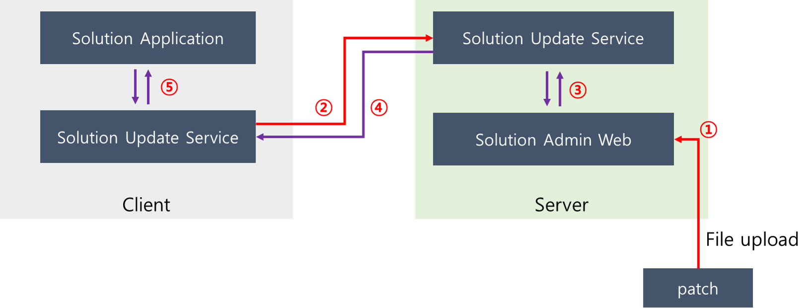
클라이언트 패치 흐름도 예시
- 관리자가 패치파일을 관리자 웹으로 업로드
- 클라이언트 서비스가 서버로 새로운 패치가 있는지 확인
- 관리자 웹을 통해 등록되었던 새로운 패치파일 위치 확인
- 서버에서 새로운 패치파일을 클라이언트로 다운로드
- 패치파일이 클라이언트에서 실행하며 솔루션 어플리케이션 패치적용
보안
클라이언트 또는 서버 복제 방지
기업용 솔루션 소프트웨어를 판매할 때 중요한 것 중에 하나가 소프트웨어 라이선스이다.
라이선스를 통해 솔루션 기업은 매출을 발생시킬 수 있기 때문이다.
만일 200명 직원이 있는 A 기업에서 B 솔루션의 복제 취약점을 알게되면 1copy 라이선스를 구입 또는 SW를 구입 비용 없이 무료로 솔루션을 사용할 수 있는 문제가 발생하게된다.
때문에 다양한 상황에서 비정상적인 방법으로 솔루션을 사용할 수 있는 방법에 대해 최대한 보완을 해야 한다고 생각한다.
가상화 환경
hypervisor 또는 container 환경은 환경자체를 복제 할 수 있다.
만일, 가상환경에 유료로 구입한 SW를 설치한 뒤 가상환경을 복제하여 사용하게 된다면 어떻게 할 것인가에 대해 고민이 필요하다. 가상환경을 A와 B 100% 동일하게 복제하여 운영할 수 없으므로 변경되는 정보에 대해 감지를 하고 SW 사용 인증을 해제해야 된다.
실제로 Virtual Box를 통해 윈도우 10을 설치하고 정품 인증을 마친 후 ova파일로 변환시켜 다른 컴퓨터에서 불러와 실행하면 윈도우 10 인증은 풀려 있던 경험을 한 적이 있다.
라이선스 키
소프트웨어을 설치 과정에서 초반에 정품 키를 입력하라는 단계가 발생한다.
만일 정품 키를 공유해서 정품 소프트웨어로 설치된다고 하면 어떻게 할 것인가?
초반에는 인증키가 일치하면 설치하는 형태였지만 이후에는 인터넷을 통한 인증서버의 확인을 거쳐야 최종적으로 소프트웨어 사용 인증을 받을 수 있는 방법으로 발전했다.
여기서 끝나는 것이 아니라 해커들이 인증서버르 우회시켜 어떠한 인증키를 입력해도 정품인증이 되게 한다고 하면 어떻게 할 것인가? 정품인증 무력화에 대해 개발사에서도 끊임없이 개선을 해야 한다는 점은 분명하다.
인증된 사용자 계정
최근 트렌드는 클라우드 형태의 웹 서비스 형태로 솔루션을 제공하는 사례가 많다.
인증된 계정을 통해 정품 소프트웨어 사용할 수 있다. 그런데 중복 계정 로그인에 예외처리를 하지 않는다면 어떻게 될까? 계정 공유를 통해 여러사람이 정품 소프트웨어를 사용할 수 있기 때문에 중복로그인 여부를 체크해야 한다.